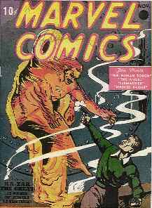
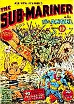
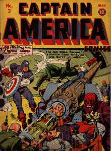
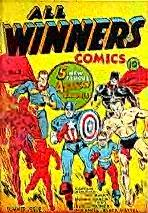
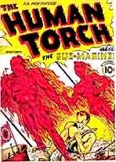

|
|
|
History of
The Golden Age 1940's The cover of the first issue depicted the Human Torch melting his way through a steel door to confront a crook armed with a pistol and a hand grenade. This fiery super hero, created by Carl Burgos, joined Bill Everett's aquatic avenger The Sub-Mariner to become one of the twin stars of the immediately successful Marvel Comics. The debut of two major heroes in one comic book was especially appreciated by depression-era kids looking for thrills and adventure at bargain prices.  This first issue of Marvel Comics, originally priced at ten cents, has become perhaps the most valuable comic book ever published. In 1987 a rare copy in mint condition changed hands for $82,000. Its status as the maiden effort of the Marvel line, coupled with its atypical introduction of two classic characters, has made it a cherished milestone of popular culture. Published in October 1939 and reprinted the following month, this comic book is the embodiment of what fans call the Golden Age, that period of innocence when both fans and the comics themselves were young. Because comic books were new, every page promised something fresh and interesting. The exhilaration of a new medium shines through, for this was a golden age for the comic book creators as well.  Captain America was the hero who put Marvel, then know as Timely, into the top rank of comic publishers. The time was ripe for an idealized freedom fighter that possessed "the character to win and to triumph over evil." The cover of Captain America #1, which showed the new hero, dressed in red, white and blue, punching Adolf Hitler in the face. The date was March 1941, nine months before Pearl Harbor. The timing was perfect, and the unusual move of starting a new character in his own comic book would prove to be very successful. Sales were up to, after the first issue, close to the million mark. A circulation figure like that, far above what most popular comics achieve today, put Captain America in the same league with Superman and Batman as one of the true giants of the Golden Age. As a contrast, consider that the weekly circulation of Time magazine during the same time period was 700,000. Captain America was not born with great power, but rather had it bestowed upon him as a gift. The champion of freedom started out as Steve Rogers, a scrawny 4-F rejected by the army and then redeemed by a dose of a strange liquid that turned him into a hero. It could happen to anyone, even the ordinary reader. And part of the attraction was that Steve Rogers never became excessively gifted; he wasn't invulnerable - he was just tougher and braver and smarter than anyone else.  The Red Skull was the greatest villain of the Golden Age. Created by Joe Simon and Jack Kirby for the first issue of Captain America, he was originally a Nazi spy who was killed, unmasked and revealed to be a corrupt American industrialist named George Maxon. Like many villains the Red Skull found death a temporary thing and returned again and again. The details of his first appearance were forgotten and he was transformed into an icon of Nazi cruelty. By the end of 1941 when the United States actually entered the war, many of Timely's characters had already been fighting it for so long that at first the change in the comics wasn't easy to discern. Ironically, by the time the war really came the fighting super heroes no longer had the comic book stage all to themselves. Beginning in April 1942, Timely expanded into humor comics. Timely's move was a response to the success of adaptations of Disney's animated cartoon characters. Then, almost accidentally, Timely tapped into a new audience: teenage girls. The cause of it all was a female character who made her debut in the back pages of Marvel Mystery Comics in 1943. Miss America, created by Otto Binder, was dressed in stars and stripes and was clearly a female version of Captain America. She got her own title in 1944 and very soon it turned Timely toward a new audience. Almost immediately the title character was dropped and Miss America Comics began to focus on the activities of average American female adolescents. Features were added on clothes, makeup and cooking, and a whole new division of comics came into being.  Stan Lee made several attempts to boost up the sagging super heroes. The three old reliables, Captain America, The Human Torch and the Sub-Mariner had been featured together on some of Alex Schomburg's wartime covers, but the trio had never been in the same story. Now, in 1946, Lee created The All Winners Squad for the nineteenth issue of All Winners Comics. He put the big three into the same story along with Miss America and the Whizzer. A few years earlier such a move might have created a sensation, but now the public didn't seem to care. The book length super-crossovers lasted two issues; then All Winners was cancelled.  By 1949 there was no place for the amazing if occasionally absurd super heroes who had defined the Golden Age. The old heroes who had gone to war before the country did just faded away while everyone was busy reading cowboys, crime and love stories. There was even room in the 1949 publication schedule for a comic book called Blaze the Wonder Collie. Gene Colan drew the cover of the final issue of Captain America (February 1950), but by then it was a horror comic called Captain America's Weird Tales and Captain America didn't even appear in it. The Human Torch was cancelled in March 1949, and his former sparring partner The Sub-Mariner sank three months later. Marvel Mystery Comics, the title that had started it all, disappeared in June 1949. It had run for a very successful ninety two issues.
RETURN TO THE MARVEL'S MAIN HOME PAGE
|